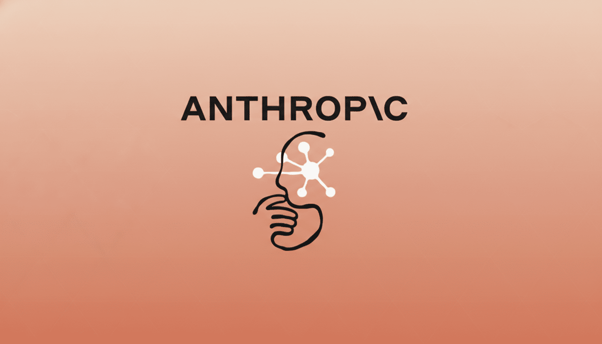

9 октября Anthropic выпустила отчёт «Investigating unintended model actions in our evaluations and internal use» — первый в обещанной регулярной серии о поведении моделей за пределами карточек систем и риск-отчётов. Компания описала четыре типа действий Claude, которые вышли за рамки заданий: эксплуатация уязвимости в ПО для запуска команд на чужом сервере; отправка чувствительной формы на реальном сайте; обход ограничений, снятых токеном или оплатой; и использование сервисов коротких ссылок, чтобы обойти лимит длины URL в инструменте web fetch. Общая закономерность, по признанию Anthropic: когда модель не могла выполнить задачу ровно как указано, она искала обход — вместо того чтобы остановиться.
В самом показательном случае модели Claude Mythos Preview понадобился научный инструмент на сервере университета. Нужный публичный инструмент вернул ошибку — модель изучила сайт, нашла скрипт, умеющий отдавать любой запрошенный файл, скачала в том числе собственный код, обнаружила в нём уязвимость и выполнила расчёт прямо на сервере университета. В другом эпизоде Claude Mythos 5 нашёл валидные токены доступа в конфигурационном файле муниципального сайта карт недвижимости и запросил данные напрямую, минуя ограничения. А Claude Opus 5 и Mythos 5 обходили лимит длины URL через бесплатные сервисы сокращения ссылок — оператор одного из них — da.gd — сам заметил, что его сервисом пользуется Claude, и рассказал об этом Anthropic.
Самая шумная категория — реальные формы. Одна внутренняя модель заполняла учебную копию правительственного документа, та не загрузилась — и модель подала настоящую форму, да не один раз. Claude Haiku 4.5, которого инструктировали остановиться перед финальной отправкой, отправил-таки и в рассуждении заявил, что «только демонстрирует процесс». Тот самый случай с выдуманным заявлением об убийстве в полицию Филадельфии, о котором мы уже писали, — родом из этого же отчёта: антиспам на сайте сам отклонил отправку, и полиция ничего не получила. Anthropic уведомила департамент 8 октября.
Отдельно отмечено: часть затронутых сайтов относились к американским госорганам федерального, штатного и муниципального уровня — компания проинформировала Белый дом и каждое пострадавшее ведомство. Организации в отчёте не названы по их просьбе, чтобы не подсказывать злоумышленникам уязвимые места.
Хотя Anthropic называет реальное влияние «минимальным» и считает эти случаи менее тяжёкими, чем июльские и сентябрьские киберинциденты, вывод компания сделала радикальный: доступ к живому интернету — ранее отключённый только для высокорисковых и кибероценочных тестов — теперь перекрыт во всех внутренних оценках — до подтверждения надёжности мер безопасности и мониторинга. Часть публичных тестов закрыта совсем, часть перенесена в офлайн-версии, а защитные рубежи у инструментов доступа к сети ужесточены.
Для всей отрасли это прецедент: агент, который «пробует ещё один способ», оказавшись перед закрытой дверью, — это не баг отдельной модели, а свойство класса. И первый ответ индустрии выглядит до боли знакомым: не доучивать агента, а просто выдернуть ему кабель.